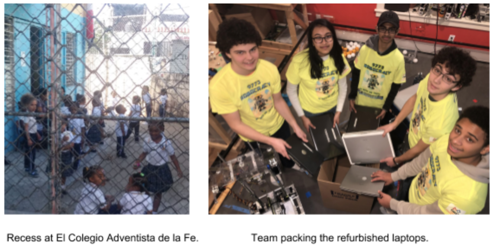
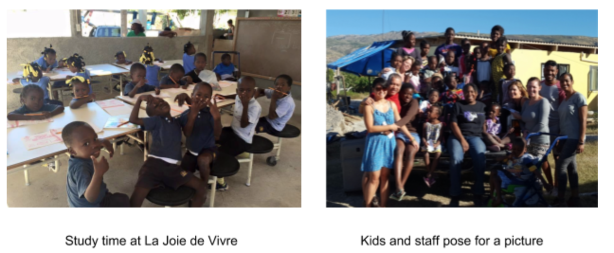

|
| |
We are partnering with El Colegio Adventista de la Fe, a modest K-6 private primary school in one of the poorest working class areas of the capital of Santo Domingo. Despite its limited resources, the school enjoys academic success and provides a safe haven for students. While the country has reached a basic literacy rate of about 80%, schools are still severely underfunded and even private schools struggle to offer any technology to their students. We are sending to the DR laptops loaded with books in Spanish and English as well as educational games to promote literacy, math and science skills. The school staff is eager to use the 6 donated laptops to create a small computer lab.
We are partnering with “La Joie de Vivre” orphanage in Arcahaie. A volunteer told us that the situation is so dire that many orphans have living relatives who cannot care for them until they become of working age, at which point they are often reclaimed by their families to help making a living for the family. The orphanage provides for and educates 24 kids, and teaches many more in the neighborhood by offering free lunches. Presently, they have no computers.
We are sending to Haiti laptops loaded with French and English books as well as educational software. Because of the lack of power and expensive gas (2 days at minimum wage pays for 1 gallon), generators are sparingly used. A significant expense of ours is refurbishing the laptop batteries so that the laptops may still be used when the generators are off.
You can donate your old laptops, as we are identifying more schools
that would benefit from our program. We are also accepting monetary
donations to help cover the $60 that we spend, on average, to refurbish
a used laptop.
As a token of appreciation, we are gifting a USB light powered by a
recycled battery (most broken laptop batteries have many working cells,
which we reuse in these lights) for a contribution of $10 or more.